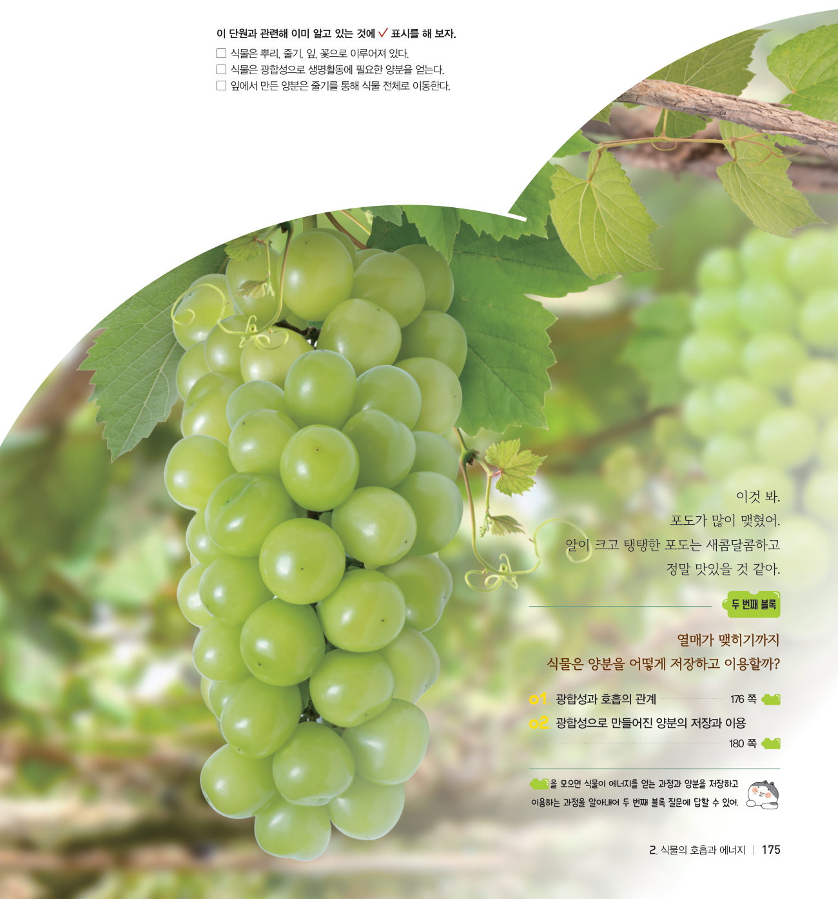
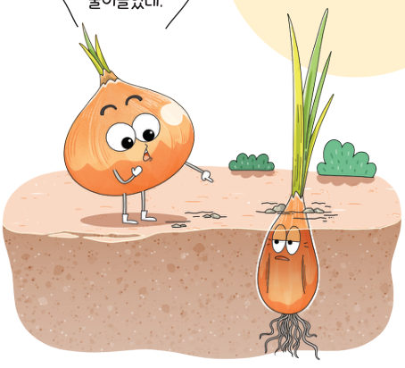
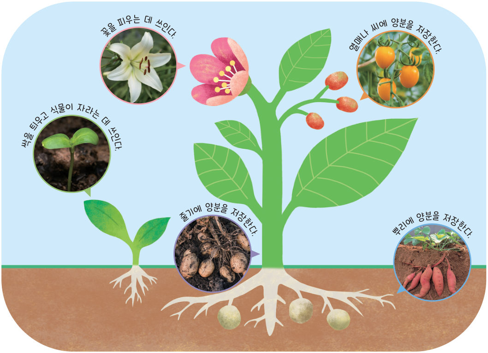
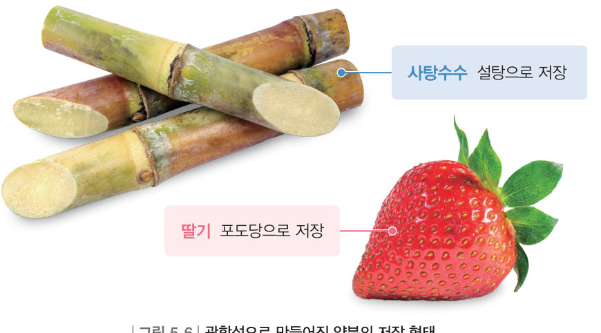

“너는 처음보다 크기가 줄어들었네.” 싹이 트면서 양파가 점점 작아지는 까닭은 무엇일까? 낮과 밤의 양분 이동을 관찰하고, 식물마다 다른 양분의 저장 형태를 알아보자.
광합성으로 만들어진 양분은 생명활동에 필요한 에너지원이다. 양분은 그림 5-5와 같이 각 기관으로 운반되고, 식물의 몸을 구성하는 성분이 되어 식물이 자라는 데 사용된다. 남은 양분은 뿌리, 줄기, 열매, 씨 등에 저장되고, 저장된 양분은 필요할 때 식물의 생명활동에 사용되거나 동물의 먹이가 된다.

광합성으로 만들어진 포도당은 잎에서 사용되거나 녹말로 바뀌어 저장된다. 녹말은 물에 잘 녹지 않기 때문에 주로 설탕으로 바뀌어 밤에 줄기의 양분이 이동하는 통로 중 체관을 통해 식물의 각 기관으로 운반된다.
양분이 저장될 때에는 그림 5-6과 같이 식물의 종류에 따라 포도당, 설탕, 녹말, 단백질, 지방 등 다양한 형태로 저장된다.

| 감자 | |
| 콩 | |
| 깨 | |
| 딸기 | |
| 사탕수수 |
| ① 동물의 먹이로 이용된다. | |
| ② 식물의 몸을 구성하는 성분이 된다. | |
| ③ 꽃을 피우거나 싹을 틔우는 데 쓰인다. | |
| ④ 양분의 저장 형태는 모든 식물에서 동일하다. |
| ⑧ 감자는 양분을 녹말로 저장한다. | |
| ⑨ 사탕수수는 양분을 지방으로 저장한다. | |
| ⑩ 딸기는 양분을 포도당으로 저장한다. |
① 식물은 호흡으로 얻은 에너지를 생명활동에 이용한다. (179쪽) ② 열매 속에 들어 있는 포도당과 같은 단맛을 내는 양분은 주로 잎에서 광합성으로 만들어진 뒤 저장된 것이다. (181쪽)
| 평가 기준 | 스스로 평가 |
|---|---|
| 지식·이해 광합성과 호흡의 관계, 양분의 저장과 이용 과정을 설명할 수 있는가? | |
| 과정·기능 양분의 저장과 이용 과정을 창의적인 모형으로 표현할 수 있는가? | |
| 가치·태도 광합성과 호흡의 관계에 흥미를 느꼈는가? |